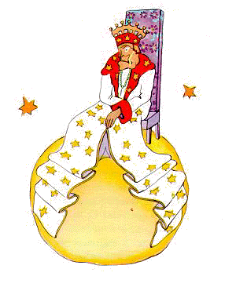
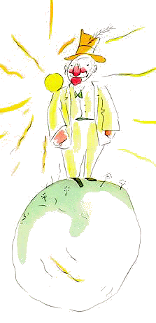
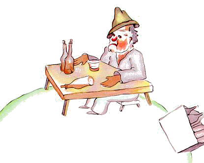
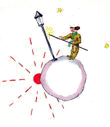
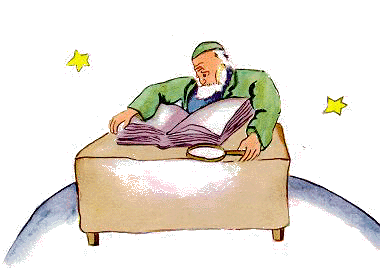
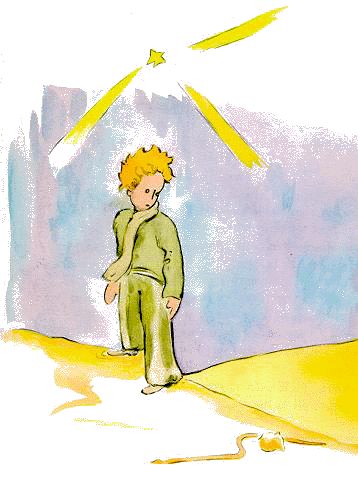
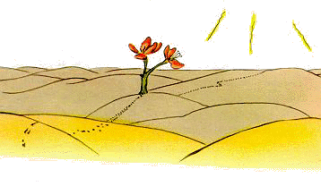
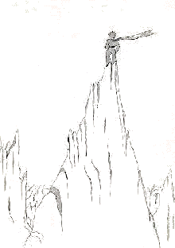

← Quay Về
Hoàng Tử Bé
Saint-Exupéry
Vĩnh Lạc dịch
X
Cậu em đã đi qua vùng
có các tiểu tinh cầu 325, 326, 327, 328, 329 và 330. Em bắt đầu đi thăm
các tiểu tinh cầu ấy để kiếm việc và để học hỏi.
Tiểu tinh cầu thứ
nhất có một ông vua ở. Nhà vua mặc áo đỏ tía đính lông thú, ngự trên một
cái ngai vàng thật giản dị nhưng đồng thời cũng thật uy nghi.

– à! Đây là một thần dân! Nhà vua kêu lên
khi thấy ông hoàng nhỏ.
Và ông hoàng bé tự hỏi:
– Làm sao ông ta nhận được ra mình khi mà
chưa gặp mình bao giờ nhỉ!
Em không biết rằng, đối với các
bậc đế vương, thế giới đơn giản lắm. Tất cả mọi người đều là thần
dân.
– Ngươi hãy đến gần cho ta nhìn ngươi được
kỹ, nhà vua nói với em, ngài rất khoái được làm vua với một người nào
đó.
Ông hoàng nhỏ đưa mắt tìm chỗ ngồi, nhưng cả tinh cầu đã
bị cái áo choàng lông thú tuyệt đẹp choán hết chỗ. Em đành phải đứng, và,
vì nhọc quá, em ngáp một cái.
– Đứng trước một bậc đế vương mà ngáp là vô
lễ, vua phán. Ta cấm ngươi ngáp.
– Chỉ vì tôi không giữ được ạ! Ông
hoàng nhỏ rất ngượng đáp lại. Tôi từ xa đến đây mà chưa được
ngủ...
– Thế thì, vua phán, ta ra lệnh cho ngươi ngáp. Bao nhiêu
năm nay, ta chưa được thấy ai ngáp. Những cái ngáp đối với ta là cái lạ
đấy. Ngươi ngáp nữa đi. Đó là lệnh ta.
– Cái này khó quá... tôi
không ngáp được nữa... Ông hoàng nhỏ nói, mặt đỏ bừng.
– Hừm! Hừm!
Vua đáp. Thế thì ta ra lệnh cho ngươi khi thì ngáp khi
thì...
Nhà vua hơi lúng túng và có vẻ phật ý.
Vì vua
chú trọng nhất là uy quyền của mình phải được tuân theo. Ngài không tha
thứ được sự trái lệnh. Đó là một nhà vua chuyên chế. Nhưng, vì ngài rất
tốt bụng, nên chỉ ra những cái lệnh hợp lý thôi.
Ngài thường phán:
"Nếu ta mà ra lệnh cho một võ tướng phải biến thành chim biển, và võ tướng
ấy chẳng tuân lệnh ta, thì ấy không phải là lỗi của võ tướng đó. ấy là lỗi
của ta."
– Tôi ngồi được không ạ? Ông hoàng nhỏ rụt
rè hỏi.
– Ta lệnh cho ngươi ngồi, vua đáp lại, vừa uy nghi kéo một
vạt áo choàng lông thú lên.
Nhưng ông hoàng bé nhỏ lấy làm
kinh ngạc. Cái hành tinh thật là bé. Đức vua có thể trị vì trên cái gì ở
đây?
– Tâu bệ hạ, em nói, cúi xin bệ hạ cho tôi
được hỏi...
– Ta ra lệnh cho ngươi hỏi, vua vội vàng nói.
–
Tâu bệ hạ, ngài trị vì trên cái gì?
– Trên tất cả. Nhà vua đáp, hết
sức giản dị.
– Trên tất cả?
Đức vua phác một cử chỉ
dứt khoát chỉ cái hành tinh của mình, các hành tinh khác và các ngôi
sao.
– Trên tất cả những cái đó? Ông hoàng nhỏ
hỏi.
– Trên tất cả những cái đó... đức vua trả
lời.
Bởi vì đó không phải là một vị vua chuyên chế mà còn là
một vị vua toàn năng.
– Các ngôi sao có tuân lệnh bệ hạ
không?
– Chắc chắn rồi, vua trả lời em. Chúng lập tức tuân lệnh.
Trẫm không dung thứ sự trái lời.
Một quyền lực như thế làm
cho ông hoàng nhỏ thích mê. Nếu em mà có quyền lực ấy, em có thể mặc sức
mà ngắm, không phải là bốn mươi bốn, mà đến bảy mươi hai, đến một trăm,
đến cả hai trăm cảnh mặt trời lặn trong một ngày, mà chẳng phải xê dịch
ghế ngồi. Rồi em cảm thấy hơi buồn vì chợt nghĩ đễn cái tinh cầu nhỏ bị bỏ
rơi của mình, em đánh bạo xin nhà vua một ân huệ:
– Tôi muốn được xem cảnh mặt trời lặn... xin
bệ hạ hãy làm tôi vui lòng, hãy ra lệnh cho mặt trời lặn...
– Nếu
ta ra lệnh cho một võ tướng bay từ đoá hoa này sang đoá hoa kia như một
con bướm, hay lệnh cho ông ta viết một vở bi kịch, hay biến thành chim
biển, và nếu vị võ tướng ấy không tuân lệnh, thì lỗi ấy ở ông ta hay ở
ta?
– ởbệ hạ, ông hoàng nhỏ cả quyết.
– Đúng. Phải cho mỗi
người làm việc người đó có thể làm, đức vua nhắc lại. Quyền lực trước hết
phải dựa trên lẽ phải. Nếu nhà ngươi ra lệnh cho thần dân của mình nhảy
xuống bể, họ sẽ làm cách mạng. Ta có quyền buộc tuân lệnh ta vì mọi lệnh
ta đều hợp lý.
– Thế cảnh mặt trời lặn của tôi thì sao? Ông hoàng
nhỏ vốn đã đặt ra câu hỏi thì không bao giờ quên, hỏi lại.
– Cảnh
mặt trời lặn của ngươi, ngươi sẽ có. Ta muốn thế. Nhưng trong khoa học cai
trị của ta, ta phải chờ đến lúc đủ mọi điều kiện.
– Đến bao giờ thì
đủ? Ông hoàng nhỏ hỏi.
– ừm! ừm! Nhà vua nói, thoạt tiên tra một
cuốn lịch to tướng, ừm! ừm! Vào lúc... khoảng... khoảng... Vào lúc chiều
nay, khoảng bảy giờ bốn mươi phút! Nhà ngươi sẽ thấy được lệnh ta được
tuân thủ.
Ông hoàng nhỏ ngáp. Em tiếc cho cảnh mặt trời lặn
hụt của em. Và rồi em cũng hơi thấy chán:
– Tôi chẳng có gì làm ở đây nữa, em nói với
nhà vua, tôi sẽ đi.
– Ngươi chớ đi, nhà vua vừa mới kiêu hãnh xiết
bao vì có được một thần dân, đáp lời ông hoàng nhỏ. Chớ đi, ta phong ngươi
làm thượng thư!
– Thượng thư bộ gì?
– Bộ... bộ tư
pháp!
– Nhưng có ai để xét xử đâu ạ!
– Chưa thể biết, vua
nói với ông hoàng nhỏ. Ta chưa đi tuần tra khắp vương quốc của ta. Ta già
quá rồi, không có đủ chỗ để một cỗ xa giá cho ta, mà đi bộ thì ta nhọc
lắm.
– ồ! Nhưng tôi đã nhìn thấy, ông hoàng nhỏ nghiêng mình nhìn
sang phía bên kia của hành tinh. Bên kia cũng chẳng có ai đâu
ạ...
– Thế thì ngươi hãy tự xét xử lấy mình đi, đức vua đáp lại em.
Đó là điều khó nhất. Xét mình khó hơn xét người nhiều. Nếu ngươi xét được
mình đúng đắn, thì ngươi là một bậc hiền lương chân chính.
– Tôi,
ông hoàng nhỏ đáp, tôi có thể tự xét mình bất cứ ở đâu. Tôi không nhất
thiết phải ở đây.
– Hừm! Hừm! Vua nói, hình như trên hành tinh của
ta, đâu đó có một con chuột. Đêm ta nghe nó kêu. Nhà ngươi có thể xét xử
con chuột già ấy. Thỉnh thoảng ngươi ghép nó vào tội tử hình. Như thế,
cuộc đời của nó sẽ tuỳ ở luật pháp của nhà ngươi. Nhưng mỗi lần buộc tội
xong, thì ngươi lại nên ân xá để dành dụm chuột. Chỉ có mỗi một con ấy
thôi.
– Tôi, ông hoàng nhỏ đáp, tôi không thích buộc tội tử hình,
và tôi chắc rằng tôi sắp sửa ra đi.
– Không, vua
nói.
Nhưng ông hoàng nhỏ, đã chuẩn bị xong, không muốn làm
phiền lòng vị vua già:
– Nếu bệ hạ muốn được tuân theo một cách
đúng đắn, thì phải cho tôi một cái lệnh hợp lý. Ví dụ như phải ra lệnh cho
tôi ra đi tức khắc. Hình như mọi điều kiện đều thuận
lợi...
Nhà vua chẳng biết trả lời sao. Thoạt đầu ông hoàng
nhỏ hơi do dự, rồi thở dài, em bước đi.
– Ta phong cho ngươi làm đại sứ, nhà vua vội
vàng kêu lên.
Trông ngài có vẻ uy nghi lẫm liệt.
Những
người lớn thật rất kỳ quặc, cậu hoàng tử thầm nhủ với chính mình trong
suốt cuộc hành trình.
XI
Trên tinh cầu thứ hai
cư trú một gã khoác lác.
– á! à! Kìa một gã ngưỡng mộ đến thăm ta! Gã
khoác lác kêu lên khi nhìn thấy ông hoàng nhỏ từ xa. Bởi vì, đối với kẻ
khoác lác, những người còn lại đều là kẻ ngưỡng mộ mình.

– Chào
anh, ông hoàng nhỏ nói. Anh có cái mũ ngộ quá.
– Cái đó là để mà
chào đấy, gã khoác lác trả lời. Để chào khi người ta hoan hô tôi. Không
may là chẳng ai qua đây bao giờ cả.
– Thế à? Ông hoàng nhỏ nói,
không hiểu gì cả.
– Hãy vỗ tay này vào tay kia đi, gã khoác lác
liền khuyên.
Ông hoàng nhỏ vỗ tay này vào tay kia. Gã khoác
lác ngả mũ chào một cách khiêm tốn.
– Coi bộ vui hơn đi thăm nhà vua, ông hoàng
nhỏ nói thầm. Và em tiếp tục vỗ tay này vào tay kia. Gã khoác lác lại ngả
mũ chào.
Sau năm phút tập dượt, ông hoàng nhỏ thấy chán vì sự
đơn điệu của cái trò chơi ấy:
– Thế, muốn cho chiếc mũ nó rơi tuột xuống,
em hỏi, thì phải làm sao?
Nhưng gã khoác lác không nghe thấy.
Những người khoác lác chẳng nghe thấy gì ngoài những câu ca ngợi.
– Chú em khâm phục ta nhiều thật chứ? Gã hỏi
ông hoàng nhỏ.
– Khâm phục nghĩa là thế nào?
– Khâm phục
nghĩa là thừa nhận ta là người đẹp nhất, ăn mặc sang nhất, giàu có nhất và
thông minh nhất trên hành tinh.
– Nhưng anh chỉ có một mình trên
hành tinh của anh chứ mấy?
– Hãy chiều ta đi mà. Dẫu sao cứ hãy cứ
khâm phục ta!
– Tôi khâm phục anh, ông hoàng nhỏ nói, hơi nhún vai,
nhưng sao điều đó lại làm anh quan tâm đến thế nhỉ?
Và ông
hoàng nhỏ ra đi.
Những người lớn chắc chắn là kỳ quặc rồi, em chỉ
nói đơn giản có thế trong suốt cuộc hành trình.
XII
Tinh cầu tiếp theo có
một bợm nhậu cư trú. Cuộc viếng thăm lần này hết sức ngắn nhưng lại làm
cho ông hoàng nhỏ miên man buồn:
– Anh làm gì đấy? Ông hoàng nhỏ nói với tay
bợm nhậu đang ngồi im lặng trước một bộ sưu tập chai không và một bộ sưu
tập chai đầy.

– Ta nhậu, bợm nhậu trả lời, vẻ thiểu não.
–
Tại sao anh nhậu? Ông hoàng nhỏ hỏi anh ta.
– Để quên, bợm nhậu trả
lời.
– Để quên cái gì? Ông hoàng nhỏ hỏi trong lúc bắt đầu cảm thấy
ái ngại cho hắn.
– Để quên nỗi xấu hổ của ta, bợm nhậu cúi đầu thú
nhận.
– Xấu hổ vì cái gì? Ông hoàng nhỏ hỏi, đã muốn giúp đỡ
hắn.
– Xấu hổ vì cái nhậu! Bợm nhậu kết thúc và nhất quyết lặng
im.
Và ông hoàng thì ra đi, sửng sốt.
Những người lớn
nhất định là rất kỳ quặc, cậu tự nói thầm trong suốt cuộc hành
trình.
XIII
Tinh cầu thứ tư là
của một nhà doanh nghiệp. Ông này bận rộn đến nỗi không ngẩng được đầu lên
khi ông hoàng nhỏ tới.
– Chào ông, em nói với hắn. Điếu thuốc lá
của ông tắt rồi.
– Ba với hai là năm. Năm với bảy là mười hai. Mười
hai với ba là mười lăm. Chào chú. Mười lăm với bảy là hăm hai. Hăm hai với
sáu là hăm tám. Chẳng có thời giờ mà châm lại. Hăm sáu với năm ba mươi
mốt. Xong! Tất cả là năm trăm linh một triệu sáu trăm năm mươi hai nghìn
bảy trăm ba mươi mốt.
– Năm trăm triệu cái gì vậy?
– Hử? Thế
chú vẫn còn đấy à?. Năm trăm linh một triệu... ta cũng chẳng biết là cái
gì nữa. Ta có quá nhiều công việc! Ta rất đứng đắn, ta, ta không thích
những trò nhảm nhí! Hai với năm là bảy...

– Năm trăm linh một triệu
cái gì? Ông hoàng nhỏ lặp lại, suốt đời em, không bao giờ bỏ ra một câu
hỏi một khi đã nêu nó ra.
Nhà doanh nghiệp ngẩng đầu
lên:
– Năm mươi bốn năm ta ở trên cái hành tinh
này, ta chỉ bị quấy rầy có ba lần. Lần đầu cách đây hai mươi hai năm do
một con bọ hung chỉ có trời biết từ đâu rơi xuống. Nó gây nên một tiếng
động khủng khiếp và làm cho ta cộng sai bốn chỗ trong một bài tính cộng.
Lần thứ hai, là cách đây mười một năm, do một cơn cảm cúm. Ta không có tập
thể dục. Ta không có thì giờ chơi bời. Ta, ta là một người đứng đắn! Lần
thứ ba... là lần này! Khi ta đang tính tới năm trăm linh một
triệu...
– Triệu cái gì?
Nhà doanh nghiệp biết không
hy vọng gì được yên thân:
– Triệu những vật nho nhỏ đôi khi nhìn thấy
trên trời ấy.
– Những con ruồi?
– Không phải, những vật nhỏ
lấp lánh ấy.
– Những con ong?
– Không mà... Những vật nho
nhỏ vàng óng vẫn làm cho bọn người vô tích sự chúng nó mơ màng ấy. Ta, ta
là một người đúng đắn! Ta không có thì giờ đâu mà mơ màng.
– à!
Những ngôi sao.
– Đúng rồi đấy. Những ngôi sao.
– Thế ông
làm gì với năm trăm triệu ngôi sao?
– Năm trăm linh một triệu sáu
trăm năm mươi hai nghìn bảy trăm ba mươi mốt. Ta, ta là một người đứng
đắn, ta rất chính xác!
– Thế ông làm gì với những ngôi
sao?
– Ta làm gì à?
– Vâng.
– Chẳng làm gì sất. Ta
chiếm hữu chúng.
– Ông chiếm hữu những ngôi sao?
–
Phải.
– Nhưng tôi biết một ông vua cũng...
– Các ông vua
không chiếm hữu gì cả. Họ chỉ "trị vì" ở trên thế thôi. Rất khác
nhau.
– Thế việc sở hữu những ngôi sao giúp gì cho ông?
– Nó
giúp ta giàu.
– Giàu giúp ông được gì?
– Mua những ngôi sao
khác, nếu có người tìm thấy nữa.
Cái ông này, ông hoàng nhỏ
nghĩ thầm, ông ta lý sự hơi giống tay bợm nhậu của mình.
Tuy thế em
vẫn hỏi thêm:
– Làm thế nào người ta sở hữu những ngôi
sao?
– Chúng của ai nào? Nhà doanh nghiệp vặn lại, sửng
cồ.
– Tôi không biết. Không của ai cả.
– Thế thì chúng là
của ta, bởi ta nghĩ tới trước nhất.
– Chỉ thế là đủ ư?
–
Chắc rồi. Khi chú tìm thấy một viên kim cương không là của ai cả, thì nó
là của chú. Khi chú tìm thấy một hòn đảo không phải là của ai cả, thì hòn
đảo ấy là của chú. Khi chú là người đầu tiên có một sáng kiến, chú đăng ký
tác quyền cho sáng kiến đó, nó là của chú. Và ta có được những ngôi sao
kia, vì chưa hề có ai trước ta nghĩ đến việc chiếm hữu chúng.
–
Điều này thì đúng, ông hoàng nhỏ nói. Ông dùng chúng để làm gì?
–
Ta quản lý chúng. Ta đếm đi rồi ta đếm lại chúng, nhà doanh nghiệp nói.
Khó đấy. Nhưng ta là một người đứng đắn!
Ông hoàng nhỏ vẫn
chưa bằng lòng:
– Tôi đấy ư, nếu tôi có một chiếc khăn
quàng, tôi quàng nó vào cổ và mang nó đi. Tôi, nếu tôi có một bông hoa,
tôi có thể hái bông hoa đó và mang nó đi. Còn ông đâu có thể hái các ngôi
sao!
– Không, nhưng ta có thể bỏ chúng vào ngân hàng.
–
Nghĩa là thế nào?
– Nghĩa là ta viết trên một tờ giấy con số ngôi
sao của ta. Sau đó ta khoá chặt mẩu giấy ấy trong một cái tủ.
– Chỉ
thế thôi à?
– Thế đủ rồi.
Buồn cười thật, ông hoàng
nhỏ nghĩ thầm. Có vẻ nên thơ đấy. Nhưng mà không đứng đắn lắm
đâu.
Ông hoàng nhỏ nghĩ về việc đứng đắn rất khác với những người
lớn.
– Tôi, em lại nói, tôi có một bông hoa mà
hôm nào cũng tưới. Tôi có ba quả núi lửa mà tuần nào tôi cũng nạo vét. Tôi
cũng nạo vét cả quả núi lửa đã tắt. Biết đâu đấy! Cái đó giúp ích cho các
quả núi lửa, và giúp ích cho bông hoa của tôi, nên tôi có chúng. Nhưng ông
chẳng giúp ích gì cho những ngôi sao cả...
Nhà doanh nghiệp
mở miệng nhưng chẳng biết trả lời ra sao cả, và ông hoàng nhỏ ra
đi.
Những người lớn nhất định là những người hoàn toàn kỳ quái. Em
nghĩ thầm một cách đơn giản như vậy trong suốt cuộc hành trình.
XIV
Hành tinh thứ năm rất
lạ. Nó là cái bé nhất trong số các hành tinh. ởđấy chỉ đủ chỗ cho một cây
cột đèn và một người thắp đèn. Ông hoàng nhỏ nghĩ mãi nhưng không thể nào
hiểu được tại sao, đâu đó trong bầu trời, trên một hành tinh không nhà
cửa, không dân cư, lại có một cây cột đèn và một người thắp đèn để làm
chi. Tuy vậy em tự bảo:
– Rất có thể người này là vô lý. Tuy thế ông
ta còn ít vô lý hơn ông vua, ít vô lý hơn kẻ khoác lác, ít vô lý hơn nhà
doanh nghiệp, ít vô lý hơn tay bợm nhậu. ít ra công việc ông ta làm còn có
một ý nghĩa. Khi ông ta thắp cây đèn của mình, như là ông ta sinh thêm một
ngôi sao hay một bông hoa. Khi ông ta tắt cây đèn, ông ta ru bông hoa hay
ngôi sao ấy ngủ. ấy là một công việc rất đẹp chứ. Việc ấy mới thật sự là
có ích là vì nó đẹp.

Khi đến gần tinh cầu, em kính trọng chào
người thắp đèn:
– Chúc một ngày tốt lành. Tại sao ông tắt
đèn đi?
– Đó là điều lệnh, người thắp đèn trả lời. Chúc một ngày
tốt lành.
– Điều lệnh gì vậy?
– Là tắt đèn đi. Chúc một buổi
tối tốt lành.
Và ông ta lại thắp đèn lên.
– Nhưng tại sao ông lại vừa thắp đèn
lên?
– Điều lệnh mà, người thắp đèn trả lời.
– Tôi không
hiểu, ông hoàng nhỏ nói.
– Chẳng có gì mà hiểu cả, người thắp đèn
nói. Điều lệnh là điều lệnh. Chúc một ngày tốt lành.
Rôi ông
ta tắt cây đèn.
Và ông ta thấm mồ hôi trên trán bằng một chiếc mùi
soa ca rô đỏ.
– Nghề của ta làm đây thật kinh khủng. Xưa
kia thì nó còn có lý. Sáng ta tắt, tối ta thắp. Phần còn lại ta nghỉ, phần
đêm còn lại ta ngủ...
– Nhưng sau đó điều lệnh thay đổi
sao?
– Điều lệnh không thay đổi, người thắp đèn nói. Bi kịch là ở
chỗ đó! Cứ mỗi năm hành tinh này lại quay nhanh hơn, thế mà điều lệnh
không thay đổi!
– Thế thì sao? Ông hoàng nhỏ hỏi.
– Vì hiện
nay nó quay mỗi phút một vòng, ta không còn lấy một giây để nghỉ ngơi. Mỗi
phút ta phải thắp đèn và phải tắt đèn một lần!
– Lạ thực đấy! ởđây
ngày dài chỉ có một phút thôi!
– Chẳng có gì lạ cả, người thắp đèn
nói. Ta chuyện trò với nhau thế mà đã một tháng rồi đấy.
– Một
tháng kia ư?
– Phải, ba mươi phút. Ba mươi ngày. Chúc một đêm tốt
lành.
Rồi ông lại thắp ngọn đèn.
Ông hoàng nhỏ nhìn
ông ta và thấy yêu mến người thắp đèn trung thành đến thế với điều lệnh.
Cậu em nhớ tới những cảnh mặt trời lặn mà xưa kia chính em phải đi kiếm để
xem, bằng cách dịch ghế ngồi. Em muốn giúp ông bạn thân:
– Này ông... tôi biết cách cho ông nghỉ ngơi
khi nào ông muốn đấy...
– Ta luôn luôn muốn, người thắp đèn
nói.
Bởi vì người ta có thể, cùng một lúc, vừa trung thành
lại vừa lười biếng.
Ông hoàng nhỏ hỏi tiếp:
– Cái hành tinh của ông nhỏ đến nỗi ông có
thể bước sải ba bước là đi giáp một vòng. Ông chỉ có việc đi chầm chậm để
lúc nào cũng ở dưới ánh mặt trời cả. Khi nào ông muốn nghỉ, ông cứ bước
đi... thế là ông muốn ngày dài bao nhiêu thì nó dài bấy nhiêu.
–
Cái ấy chẳng được việc gì cho ta, người thắp đèn nói. Cái mà ta thích nhất
trên đời, là ngủ.
– Thế thì thật là không may, ông hoàng nhỏ
nói.
– Thật là không may, người thắp đèn nói. Chúc một ngày tốt
lành.
Rồi ông ta tắt đèn.
Cái ông này, ông hoàng nhỏ
nghĩ thầm trong lúc tiếp tục cuộc hành trình. Ông ta sẽ bị tất cả những
người kia khinh thường, ông vua, lão khoác lác, tay bợm nhậu, nhà doanh
nghiệp. Trong khi đó chỉ có ông ta là không thấy buồn cười. Có lẽ bởi vì
ông lo toan cho một cái gì khác chứ không phải là bản thân ông
ta.
Em thở dài tiếc rẻ và nghĩ tiếp:
– Ông ta là người duy nhất đáng cho mình kết
bạn. Nhưng tinh cầu của ông ấy bé quá. Không có chỗ cho hai
người...
Điều mà ông hoàng nhỏ không thể thú nhận với mình,
ấy là em tiếc cái hành tinh thiên phúc này là vì, trước hết, là nó có một
nghìn bốn trăm bốn mươi lần mặt trời lặn trong hai mươi bốn tiếng đồng
hồ!
XV
Tinh cầu thứ sáu là
tinh cầu mười lần rộng hơn. ở trên đó có một tôn ông già đang viết những
cuốn sách dày cộp.
– Kìa! Kia là một nhà thám hiểm! Ông ta kêu
lên thế khi nhìn thấy ông hoàng nhỏ.
Ông hoàng nhỏ ngồi lên
bàn và thở một lúc. Em đã đi một quãng đường khá xa.
– Chú từ đâu đến? Tôn ông già hỏi.
–
Cuốn sách bự này là cuốn sách gì vậy? Ông hoàng nhỏ hỏi. Ông làm gì ở
đây?
– Ta là nhà địa lý, tôn ông già nói.
– Nhà địa lý là
người như thế nào?
– Đó là một nhà bác học biết rõ đâu là sông
biển, núi non, thành phố và sa mạc.
– Thế thì thích thật, ông hoàng
nhỏ nói. Bây giờ ta mới gặp được một nghề ra nghề.
Rồi em đưa
mắt nhìn cái hành tinh của nhà địa lý, xung quanh em. Em chưa hề nhìn thấy
một hành tinh uy nghi như vậy.

– Tinh cầu của ông đẹp quá. Có đại dương
không ông?
– Ta không biết, nhà địa lý nói.
– A! (ông hoàng
nhỏ thất vọng). Còn núi non?
– Ta không biết, nhà địa lý
nói.
– Và các thành phố, và các con sông, và các sa mạc?
–
Ta cũng không biết nốt, nhà địa lý nói.
– Ông là nhà địa lý cơ
mà!
– Đúng, nhà địa lý nói. Nhưng ta có là nhà thám hiểm đâu. Ta
hoàn toàn thiếu các nhà thám hiểm. Nhà địa lý không phải là người đi đến
các thành phố, sông biển, núi non, đại dương và sa mạc. Nhà địa lý rất
quan trọng không thể đi lung tung. Ông ta không rời bàn giấy của mình.
Nhưng ông ta tiếp các nhà thám hiểm. Ông ta phỏng vấn họ, và ông ta ghi
chép lại những hồi ức của họ. Và nếu hồi ức của một trong các nhà thám
hiểm ấy mà đáng chú ý thì nhà địa lý sẽ cho điều tra về tư cách của nhà
thám hiểm ấy.
– Tại sao vậy?
– Bởi vì nhà thám hiểm ấy mà
nói dối sẽ gây nên những sai lầm tai hại trong các sách địa lý. Và cả nhà
thám hiểm nào uống rượu nhiều quá nữa.
– Tại sao vậy? Ông hoàng nhỏ
hỏi.
– Vì các bợm nhậu thấy một thành hai. Thế là nhà địa lý sẽ ghi
hai dãy núi ở một nơi chỉ có một dãy.
– Tôi có biết một người nếu
mà làm nhà thám hiểm thì sẽ tệ hại đấy, ông hoàng nhỏ nói.
– Có thể
như thế. Vậy nên khi tư cách của nhà thám hiểm được chứng minh là tốt rồi,
thì người ta mới điều tra về phát hiện của anh ta.
– Người ta đi
xem hay sao?
– Không, như thế thì phức tạp quá. Nhưng người ta đòi
hỏi nhà thám hiểm cung cấp bằng chứng. Ví dụ như tìm thấy một hòn núi lớn,
người ta buộc anh ta phải mang về những tảng đá bự.
Nhà địa
lý bỗng nhiên xúc động:
– Nhưng mà chú, chú đến từ xa. Chú là một
nhà thám hiểm! Chú hãy tả cho ta cái hành tinh của chú
đi!
Rồi nhà địa lý, sau khi đã mở cuốn sổ to, liền gọt bút
chì. Thoạt tiên người ta ghi bằng bút chì các chuyện kể của nhà thám hiểm.
Đợi cho nhà thám hiểm cung cấp bằng chứng rồi, người ta mới ghi lại bằng
bút mực.
– Thế nào? Nhà địa lý hỏi.
– ồ! Chỗ
tôi ấy ư, ông hoàng nói, chẳng có gì đáng chú ý lắm, nó bé tí tẹo mà. Tôi
có ba quả núi lửa. Hai quả hoạt động, một quả tắt. Nhưng biết đâu
đấy.
–Biết đâu, nhà địa lý nói.
– Tôi cũng có một bông
hoa.
– Chúng tôi không ghi nhận bông hoa, nhà địa lý nói.
–
Sao thế? Nó là thứ đẹp nhất kia mà!
– Bởi hoa vốn phù du.
–
Thế nào gọi là "phù du"?
– Các sách địa lý, nhà địa lý nói, là
những cuốn sách chính xác nhất. Chẳng bao giờ lỗi thời cả. Chẳng mấy khi
một quả núi lại chuyển chỗ. Chẳng mấy khi một đại dương lại cạn nước.
Chúng ta viết nên những điều vĩnh cửu.
– Song những núi lửa đã tắt
có thể thức dậy được, ông hoàng nhỏ ngắt lời. Thế nào gọi là "phù
du"?
– Núi lửa tắt hay hoạt động với bọn ta cũng thế thôi, nhà địa
lý nói. Cái ta kể tới, đó là quả núi. Nó không thay đổi.
– Nhưng
thế nào gọi là "phù du"? Ông hoàng nhỏ lặp lại, suốt đời, em đã không chịu
bỏ qua một câu hỏi, một khi đã nêu nó ra.
– Gọi như thế có nghĩa là
"đứng trước hiểm hoạ bị tiêu diệt".
– Cái hoa của tôi đang đứng
trước hiểm hoạ bị tiêu diệt ư?
– Chắc rồi.
Đoá hoa của
tôi vốn phù du, ông hoàng nhỏ tự nhủ, và nàng chỉ có bốn cái gai để chống
trọi ở đời! Thế mà ta để nàng một mình ở quê nhà!
ấy là coưn nuối
tiếc đầu tiên của em. Nhưng em lấy lại can đảm:
– Bây giờ ông khuyên tôi nên đi thăm đâu? Em
hỏi.
– Hành tinh trái đất, nhà địa lý trả lời. Hành tinh ấy nổi
tiếng lắm...
Thế là ông hoàng nhỏ ra đi, lòng mơ đến đoá hoa
của mình.
XVI
Hành tinh thứ bảy vậy
là trái đất.
Trái đất không phải là một hành tinh xoàng! Người ta
đã tính có tới một trăm mười một ông vua (trong đó, hiển nhiên là không
quên tính cả các ông vua đen), bảy nghìn nhà địa lý, chín trăm nghìn nhà
doanh nghiệp, bảy triệu rưỡi bợm nhậu, ba trăm mười một triệu kẻ khoác
lác, nghĩa là vào quãng hai tỉ người lớn.
Để các bạn có chút ý niệm
về kích thước trái đất, tôi phải nói với các bạn rằng trước khi tìm ra
được điện, trên cả sáu châu lục người ta dùng cả một đạo quân thực sự sáu
trăm bốn mươi hai nghìn năm trăm mười một người đốt đèn.
Nhìn xa xa
một chút cảnh đốt đèn đó thật tuyệt diệu. Các chuyển động của đạo quân này
qui định như trong một vở kịch ba-lê. Trước tiên là phiên những người đốt
đèn nước Tân Tây Lan và nước úc. Sau khi đốt đèn xong, họ đi ngủ. Bấy giờ
đến lượt những người đốt đèn Trung Quốc và Tây Bá Lợi á. Xong cả họ nữa,
cũng biến mất trong các hành lang. Lại đến lượt những người đốt đèn nước
Nga và nước ấn Độ. Rồi đến những người của châu Phi và châu Âu. Rồi đến
những người Nam Mỹ. Rồi đến những người Bắc Mỹ. Và chẳng bao giờ họ vào ra
sân khấu nhầm lẫn cả. Thật là vĩ đại.
Chỉ có ông đốt đèn của cây
đèn độc nhất ở Bắc Cực và ông đốt đèn của cây đèn độc nhất ở Nam Cực là
sống cuộc đời lề mề ăn không ngồi rỗi: hai ông ấy chỉ làm việc một năm có
hai lần.
XVII
Khi người ta muốn ra
vẻ thông minh, thường thì điều này sẽ dẫn đến việc người ta nói dóc đôi
chút. Tôi không thật thà lắm đâu khi kể với các bạn về những người đốt
đèn. Dám có thể tôi đã gây một ý niệm sai lầm về hành tinh của chúng ta
đối với những ai chưa biết nó. Loài người chiếm rất ít chỗ trên mặt đất.
Nếu hai tỷ con người đang sống trên mặt đất này mà đứng khá sát vào nhau,
như trong một cuộc meeting, thì họ sẽ đứng gọn trong một quảng trường chỉ
rộng hơn hai dặm, dài hai mươi dặm. Có thể dồn hết nhân loại lên một hòn
đảo bé nhất trong Thái Bình Dương.
Những người lớn, chắc chắn rồi,
sẽ chẳng tin bạn đâu. Họ nghĩ là họ chiếm nhiều chỗ lắm. Họ thấy họ quan
trọng như các cây baobab. Thế nên các bạn phải khuyên họ làm các con tính
đi. Họ tôn thờ những con số: việc ấy làm họ thích thú. Nhưng đừng có phí
nhiều thì giờ của bạn vào hình phạt đó. Chẳng ích gì. Bạn tin vào tôi
mà.
Ông hoàng nhỏ, một khi đáp xuống mặt đất, rất kinh ngạc vì
chẳng trông thấy người nào. Em đã bắt đầu sợ mình nhầm hành tinh, thì một
cái vòng mầu ánh trăng động đậy trong cát.

– Xin chào, ông hoàng nhỏ nói bâng
quơ.
– Xin chào, con rắn nói.
– Tôi rơi xuống hành tinh nào
vậy? Ông hoàng nhỏ hỏi.
– Trên trái đất, ở châu Phi, con rắn trả
lời.
– A! Thế trên trái đất không có người nào ư?
– Đây là
sa mạc. Chẳng có ai trên sa mạc đâu. Trái đất rộng lắm, rắn
nói.
Ông hoàng nhỏ ngồi trên một tảng đá và ngước mắt lên
trời:
– Có những ngôi sao được thắp sáng là để mỗi
người một ngày kia trở về ngôi sao của mình? Hãy nhìn xem tinh cầu của
tôi. Nó ở ngay bên trên chúng ta... Nhưng sao mà xa thế!
– Nó đẹp
đấy, rắn nói. Cậu làm gì tới đây?
– Tôi có chuyện rắc rối với một
bông hoa, ông hoàng nhỏ nói.
– à! rắn nói.
Và cả hai
lặng thinh.
– Loài người ở đâu? Sau cùng ông hoàng nhỏ
tiếp tục. Trong sa mạc thấy hơi bơ vơ...
– Ngay giữa loài người,
cũng bơ vơ, rắn nói.
Ông hoàng nhỏ nhìn rắn rất lâu:
– Anh là một con vật buồn cười thật, em nói,
mảnh khảnh cứ như một ngón tay...
– Nhưng ta mạnh hơn ngón tay của
một ông vua, rắn nói.
Ông hoàng nhỏ mỉm cười:
– Anh không mạnh lắm đâu... đến chân anh
cũng chẳng có... anh muốn đi xa cũng không được...
– Ta có thể chở
cậu đi xa hơn cả một chiếc tàu, rắn nói.
Rắn cuốn quanh mắt
cá của ông hoàng nhỏ, trông giống một chiếc vòng vàng:
– Kẻ nào bị ta chạm tới, ta sẽ trả hắn về
với đất là nơi hắn sinh ra. Nhưng cậu thì trong sạch và cậu từ một ngôi
sao tới...
Ông hoàng nhỏ không nói gì.
– Anh là một con vật buồn cười thật, em
nói.
– Cậu làm cho ta thương hại, cậu thật yếu đuối, trên cái trái
đất bằng đá hoa cương này. Ta có thể giúp đỡ cậu một ngày nào đó nếu cậu
nhớ tinh cầu của cậu. Ta có thể...
– ồ! Tôi hiểu rồi, ông hoàng nhỏ
nói. Nhưng tại sao anh lúc nào cũng nói bí hiểm thế?
– Mọi điều bí
hiểm, ta đều giải hết, rắn nói.
Và họ lặng thinh.
XVIII
Ông hoàng nhỏ đi qua sa mạc và chỉ gặp có một bông
hoa. Một bông hoa chỉ ba cánh, một bông hoa chẳng là gì
cả...

– Chúc một ngày tốt lành, ông hoàng nhỏ
nói.
– Chúc một ngày tốt lành, bông hoa nói.
– Loài người ở
đâu? Ông hoàng nhỏ lễ phép hỏi.
– Người hả? Có loài ấy đấy. Khoảng
sáu hay bảy mống. Em có nhìn thấy họ mấy năm trước kia. Nhưng không ai
biết tìm họ ở đâu. Gió thổi họ đi. Họ chẳng có rễ, cái đó phiền cho họ
lắm.
– Từ biệt, ông hoàng nhỏ nói.
– Từ biệt, đoá hoa
nói.
XIX
Ông hoàng nhỏ trèo lên một quả núi cao. Trước đây
những núi non duy nhất mà em biết chỉ là ba quả núi lửa cao ngang
đầu gối em. Và em đã dùng quả núi lửa đã tắt làm ghế ngồi. " Từ trên
một quả núi cao như quả núi này, em nói thầm, mình sẽ đưa mắt là
thấy ngay hành tinh và tất cả mọi người . . . ". Nhưng em chỉ đã
thấy có những mũi nhọn của các tảng đá nhọn
hoắt.

– Chúc một ngày tốt lành, em nói bâng
quơ.
– Chúc một ngày tốt lành! Chúc một ngày tốt lành! Chúc một
ngày tốt lành! tiếng vang đáp lại.
– Các anh là ai? Ông hoàng nhỏ
hỏi.
– Các anh là ai! Các anh là ai! Các anh là ai! tiếng vang đáp
lại.
– Hãy làm bạn với tôi, tôi cô đơn lắm, em nói.
– Tôi cô
đơn lắm! Tôi cô đơn lắm! tiếng vang đáp lại.
"Cái hành tinh
này buồn cười thật! Lúc đó em nghĩ thầm. Nó khô khốc, và nhọn hoắt và mặn
chát. Và những con người thì thiếu hẳn óc tưởng tượng. Họ chỉ lặp lại
những gì họ đã nghe.... ở chỗ tôi có một bông hoa: Nàng bao giờ cũng nói
trước!"
Trang sau ->